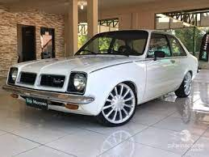
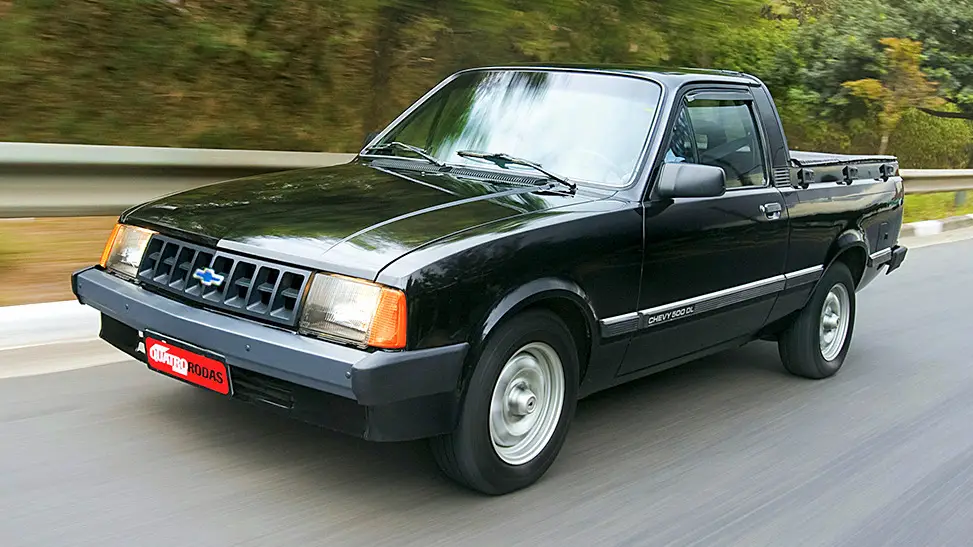
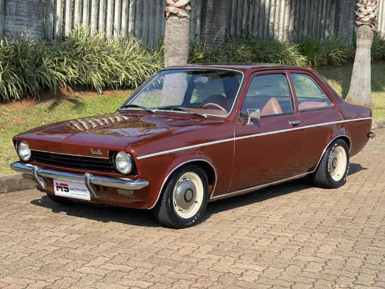
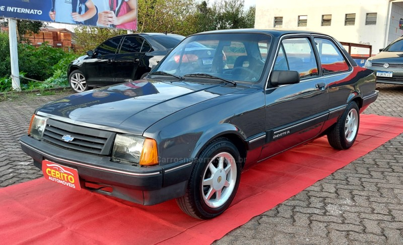

Chevettes
Chevette SL:
(O Chevette SL 1982 dividia o topo da tabela entre os nacionais mais emplacados, e protagonizou um briga bastante acirrada com o recém chegado VW Voyage. Com uma estrutura menos atualizada que o modelo Volkswagen, o Chevette se destacava na confiabilidade, conforto e um preço mais acessível na compra da unidade zero km.)
Chevy 500:
(A GM respondeu ao segmento de pick-up, que nasceu no início dos anos 80, lançando no Brasil em Novembro de 1983 a Chevy 500, como uma resposta a Volkswagen Saveiro, Fiat City e Ford Pampa, sendo a última a líder do segmento por quase todos anos 80.O nome, "Chevy 500" faz uma alusão a capacidade de carga de 500 kg que ela poderia levar em sua caçamba no Brasil. Entre as rivais, era a única a contar com tração traseira, que ajuda (e muito) quando a picape está carregada, além de ter uma boa condição em terrenos acidentados, como lama ou de difícil travessia. Porém o assoalho baixo fazia com que a caçamba perdesse um pouco da capacidade cúbica, ao trazer uma altura de apenas 43 centímetros.)
Chevette Tubarão:
(O Chevette Tubarão foi o modelo original do compacto da General Motors, fabricado a partir de 1973. O apelido vem da frente curvada para dentro, que os donos acabaram chamando-o de tubarão devido a sua forma, que lembraria o animal marinho. Além disso, o Chevette Tubarão surgira na mesma época em que o filme Tubarão estreou nas telonas, apavorando muita gente. Não se sabe se a produção cinematográfica americana influenciou também, mas ao contrário do “carcharodon carcharias”, o pequeno da GM agradou muito mais. Assim como ele, foi um alemão naturalizado brasileiro, que caiu no gosto do público dos anos 70, sendo feito assim até 1977. Ele teve cinco versões, sendo que duas delas eram “esportivas” e com direito a visual personalizado.)
Chevette original:
O Chevette foi um automóvel lançado pela General Motors no ano de 1973, sendo fabricado pela montadora Chevrolet no Brasil. É a 3 geração do Opel Kadett lançado na Europa em 1973. Foi introduzido inicialmente como um sedan duas portas mantendo como sua principal característica, mas posteriormente também foram oferecidos modelos com 4 portas para exportação (de 1978 a 1987) e versões em hatchback (de 1980 a 1987). O Chevette originou outros modelos derivados como a station wagon Marajó (fabricada de 1980 a 1989) e a pickup Chevy 500 (produzida de 1983 a 1995). O veículo também ficou conhecido pela sua potência oferecida. Durante toda sua história, o Chevette já veio equipado com vários motores: 1.0 litro (versão Júnior lançado em 1992), 1.4 (carburação simples e dupla, esta somente em 1982 como opcional), 1.6 (carburação simples), 1.6/S (carburação dupla, a partir de 1988, um ano após sua última reestilização) e (1.6/S carburação dupla). Também foram introduzidos motores tanto a gasolina quanto a álcoo